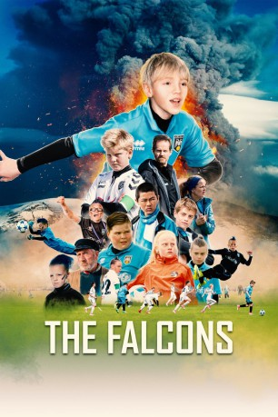

#11991 Die Falken - Alle für einen
Alternativ: The Falcons (Englischer Titel)
 
 IMDB-Wertung: 6.3 / 10
IMDB-Wertung: 6.3 / 10  Metascore: 0
Metascore: 0 
Jedes Jahr findet auf den Westmännerinseln vor der isländischen Südküste ein großes Fußballturnier für Kinder statt. In diesem Jahr geht der zehnjährige Jon mit seinem Team, den `Falken', an den Start. Dort muss er auf dem Platz und auch abseits des Spielfeldes seinen ganzen Mut zusammennehmen und über sich selbst hinauswachsen, um Ivar aus der gegnerischen Mannschaft vor dessen Vater zu beschützen.
Jahr: 2018
Dauer: 88 Minuten
FSK:
Land: Island Studio: SamfilmTonspuren:
Untertitel:
Auflösung: 720p (1280x536) Größe: 1863 MB
Genre: Drama, Komödie, Familie, Sport
Regisseur: Bragi Thor Hinriksson
Drehbuch: Ottó Geir Borg, Jóhann Ævar Grímsson, Gunnar Helgason
Soundtrack: Kristján Sturla Bjarnason
Darsteller:
- Joi Johannsson als Tóti
- Ilmur Kristjánsdóttir als Arna
 Nanna Kristín Magnúsdóttir als Júlía
Nanna Kristín Magnúsdóttir als Júlía Sigurður Sigurjónsson als Captain
Sigurður Sigurjónsson als Captain- Baldur Björn Arnarsson als Fylkisstrákur 3
- Viktor Benóný Benediktsson als Ívar
- Auðunn Blöndal als
- Friðrik Friðriksson als Finni
- Þórður Kalman Friðriksson als Gunni
- Óli Gunnar Gunnarsson als Finnur
- Egill Helgi Guðjónsson als Ingó
- Stefán Bogi Guðjónsson als Kalli
- Páll Steinar Guðnason als Bjössi
- Gunnar Hansson als Knútur
- Arnar Harðarson als Fylkisstrákur 1
- Sigurður Kári Harðarson als Fylkisstrákur 4
- Ísey Heiðarsóttir als Rósa
- Katrín Ynja Hrafnkelsdóttir als Eyvör
- Þórður Hólm Hálfdánarson als Davíð
- Bergur Þór Ingólfsson als
- Lukas Emil Johansen als Jón
- Daði Berg Jónsson als Siggi
- Kristín Lea als Hàvaðamamma
- Robert Luu als Skúli
- Oliver Einar Nordquist als Grettir
- Jón Pétursson als Rabbi
- Patrik Nökkvi Pétursson als Fylkisstrákur 2
- Björn Óli Snorrason als Palli
- Theodór Ingi Óskarsson als Einar
Datei: X:\2018(A-F)\Falken - Alle für einen, Die (2018, FSK, 1280x536).mkv seit 04.11.2019
Festplatte: HD 2017(A-Z)-2018(A-F)
 Es gibt insgesamt 151 Filme in der Gruppe '2018(A-F)'
Es gibt insgesamt 151 Filme in der Gruppe '2018(A-F)'